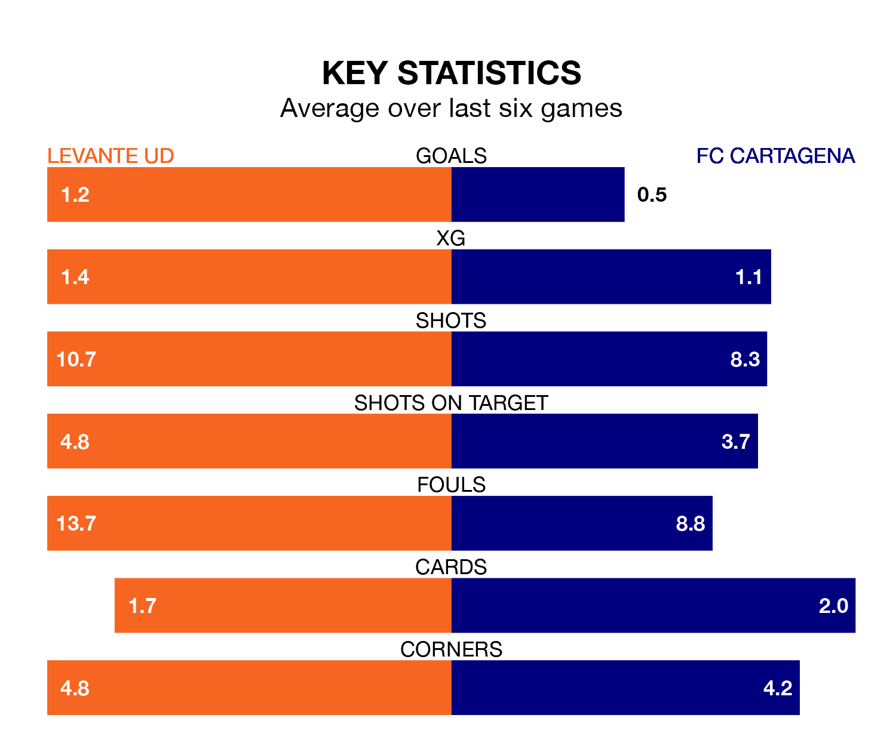

Levante UD are heavy favourites to keep all three points at home in Sunday's late kick-off against FC Cartagena.
Levante, who sit 11th in the Segunda División with 36 games played, are priced at 1.6 to seal victory at the Estadio Ciudad de Valencia.
Sitting five places and 10 points behind them in the table, Cartagena are 5.0 to win with *Betting Company*, while the draw is at 3.5.
With Andrés Fernández between the sticks, Levante can rely on one of the league's safest pair of hands. He has kept 14 clean sheets in his 28 appearances this season, and only two other 'keepers – Leganés's Diego Conde and SD Huesca's Álvaro Fernández – have been able to prevent the opposition scoring on more occasions in the Segunda División.
In Cartagena's net, Marc Martínez Aranda has three clean sheets in 21 games. He has conceded a goal every 82 minutes, 50% more often than the 120 minutes between goals for Fernández Moreno.
With 33 goals in 36 games so far this season, the visitors are scoring at below the league average rate with 0.9 goals per game. And they are conceding more than average, letting in 45 goals at a rate of 1.2 per game.
The home team, meanwhile, are above average scorers, with 1.2 goals per game, compared to a league average of 1.1. They have conceded 1.1 goals per game.
In the last three years, Levante and Cartagena have played each other on three occasions. Levante won two of them and Cartagena one.
Their last meeting was on August 25, when Levante won 1-0 away.
Levante are in mixed form in the Segunda División, with two wins and three draws from their last six games.
With two wins and two draws over that period, Cartagena's form is slightly worse – they have taken eight points from 18, compared to Levante's nine.
Levante's last match was on April 20, a 0-0 draw against Racing Santander.
Cartagena beat Real Oviedo 2-0 last time out, on Monday, with Andrés José Rodríguez Gaitán and Jairo Izquierdo González on the scoresheet.
Updated: 07:59 (UTC), 26/04/24